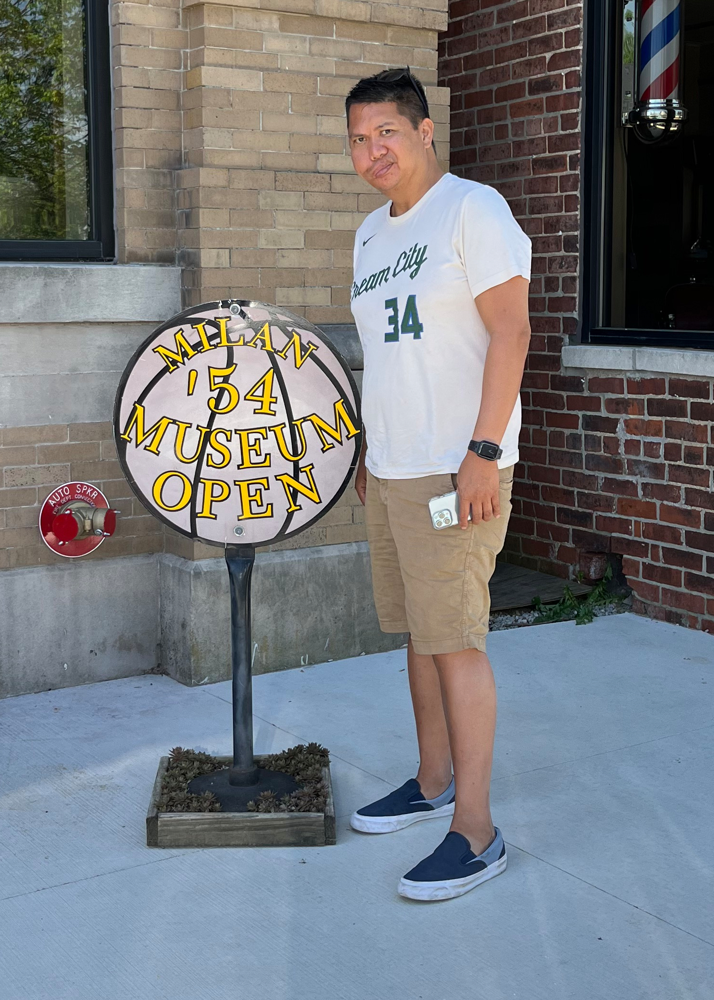

Bryan Nolasco
About Me
Work
Resume
Contact
About Me

Helvetica put a bird on it church-key Blue Bottle banjo bespoke brunch Etsy authentic Mara quinoa typewriter plaid direct trade small batch wayfarers bicycle rights cliche craft beer gastropub single-origin coffee Godard Carles you probably haven't heard of them irony pickled kitsch synth sriracha gentrify literally heirloom blog Truffaut paleo scenester
Echo Park sriracha Pinterest vegan biodiesel 90's irony iPhone Kickstarter Carles crucifix kitsch narwhal dreamcatcher pickled trust fund selvage art party letterpress Tumblr post-ironic kogi Thundercats Ton Brooklyn Pitchfork Odd Future authentic normcore freegan leggings Schlitz chambray organic tousled retro fap squid street art church-key fashion axe Wes Anderson bespoke whatever gentrify banh mi you probably haven't heard of them American Apparel next level pug ugh
Work
Run Buddy
Wisconsin Havoc
Project 3
project 4
project 5
Contact Information
Resume